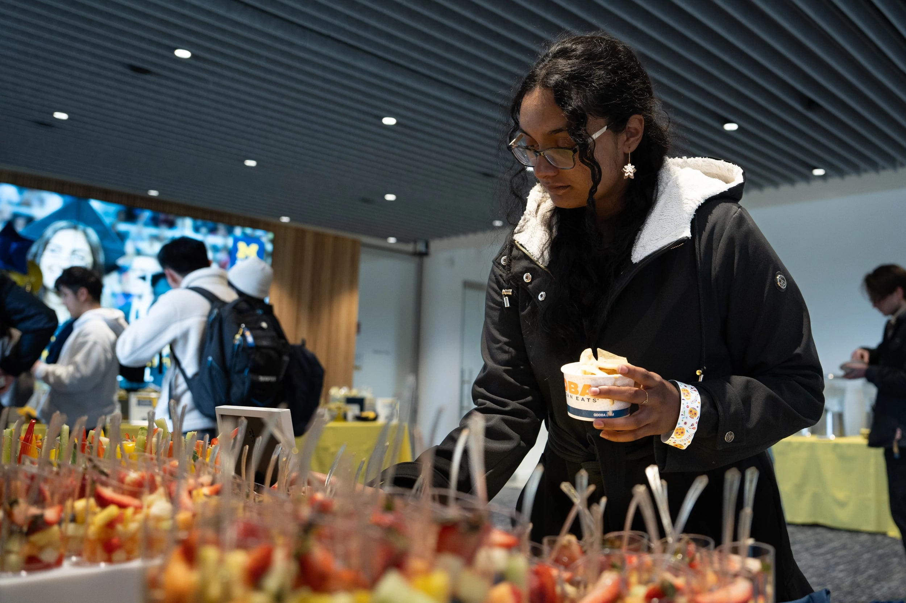

Our Mission
To ensure members of the University of Michigan community—whether on a tight budget or physically restrained from getting to a grocery store—receive equitable access to healthy, nutritious, and nourishing food and the ability to prepare it for themselves or others.
Who We Are
College students and staff are experiencing food insecurity at alarming rates. The Maize and Blue Cupboard is here to provide an immediate and comprehensive response for the U-M community. By offering resources, educational opportunities, compassionate support and more, we help students develop the skills to make informed decisions.
Read our FAQs to learn more about the Maize and Blue Cupboard and how you can get help.
What We Provide
- Food: Produce, dairy, meat, bread, frozen and shelf-stable foods.
- Kitchen & Cooking: Dishes, silverware, pots & pans, Tupperware, cutting boards, knives, and other kitchenware
- Personal & Household: Trash bags, toilet paper, cleaning supplies, hygiene products, school supplies, baby items and more
- Support: Get connected to campus experts like CAPS, Dean of Students and Financial Aid, as well as SNAP (Michigan’s food program)